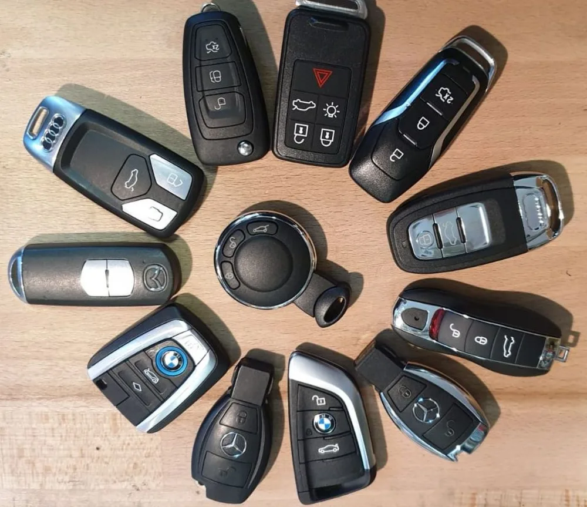
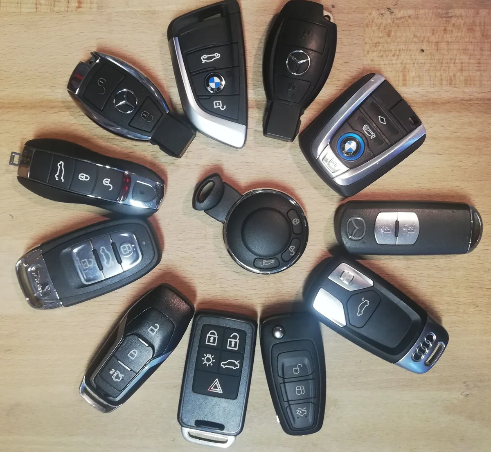
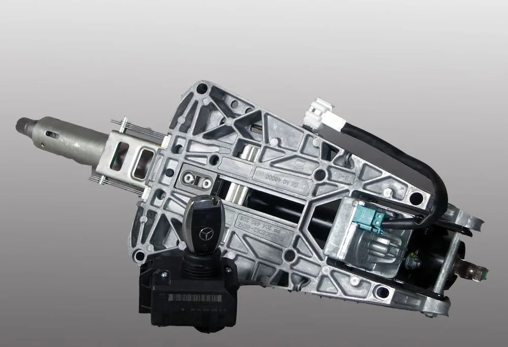
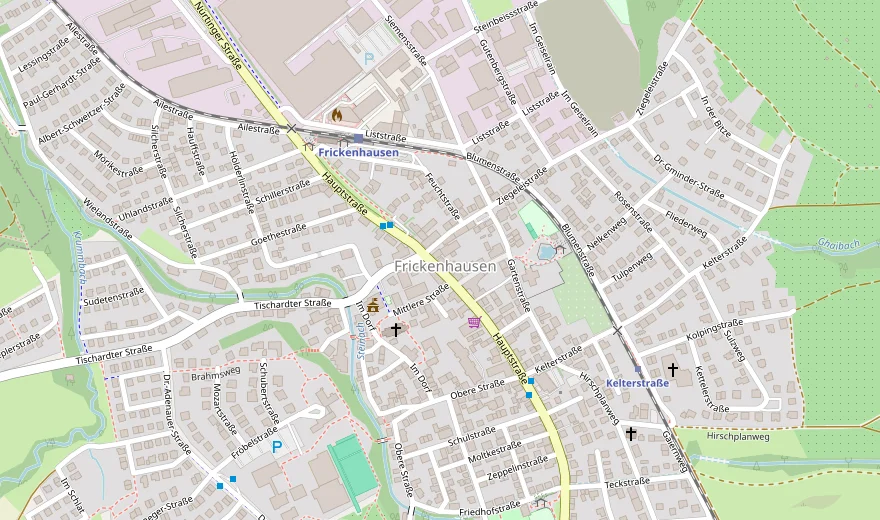

Mo–Fr 9:00–12:30 & 14:00–18:00 Uhr
Seit 1995 in Frickenhausen
Schlüssel, Schuhe, Autoschlüssel. Ein Laden, der alles drei kann.
AS – Schuh und Schlüsseldienst, Hauptstraße 21. Nachschlüssel während Sie warten, Autoschlüssel fast aller Marken, Mercedes-ELV-Reparatur in rund einer Stunde. Kommen Sie einfach vorbei – oder rufen Sie an.
Mo–Fr 9:00–12:30 & 14:00–18:00 Uhr · Mittwoch nur vormittags · Samstag geschlossen
Ich bin ausgesperrt.
Tür zu, Schlüssel drinnen? Rufen Sie uns an und schildern Sie kurz die Situation – wir besprechen sofort das weitere Vorgehen. Bitte nicht selbst an der Tür hebeln, das macht es meist teurer als die Öffnung.
07022 / 9900692Autoschlüssel verloren.
Kompletter Schlüsselverlust bei PKW oder Motorrad, Probleme mit der Wegfahrsperre? Schreiben Sie uns per WhatsApp – am besten gleich mit Marke, Modell und Baujahr. Wir melden uns mit dem weiteren Vorgehen.
WhatsApp öffnenSchlüssel, Schuhe, Gravur & Co.
Nachschlüssel, Schuhreparatur, Uhrenbatterie, Gravur oder Stempel? Kommen Sie einfach im Laden vorbei – ohne Termin. Hauptstraße 21, mitten in Frickenhausen.
Anfahrt & ÖffnungszeitenLeistungen
Alles unter einem Dach
Vom Zylinderschlüssel bis zur Wegfahrsperre, vom neuen Absatz bis zur Geschenk-Gravur.
Autoschlüssel & Funk
Nachschlüssel und Funkfernbedienungen mit Transponder für fast alle Marken – von VW, Audi, BMW und Mercedes bis Toyota, Hyundai und Volvo.

Türöffnung & Sicherheitstechnik
Zugefallene Tür, verlorener Schlüssel, klemmendes Schloss – wir öffnen fachgerecht und beraten Sie danach ehrlich, ob Ihr Zylinder getauscht werden sollte.
Schlüssel aller Art
Vom modernen Zylinderschlüssel über Buntbart-, Tresor- und Chubbschlüssel bis zu Möbel-, Dorn- und antiken Schlüsseln. Auch Schlüssel, die sonst kaum noch jemand fertigt – auf Wunsch nach Vorlage.
Autoschlüssel-Reparatur
Elektronikprobleme, Batteriewechsel, Gehäusetausch: Oft muss es kein neuer Schlüssel sein – wir reparieren, was sich reparieren lässt.
Motorrad, LKW & mehr
Schlüssel für Motorräder und Roller von Vespa bis Harley-Davidson, LKW-Schlüssel für DAF, Volvo, Scania & Co. – und für E-Bike, Wohnwagen, Traktor, Stapler oder Bagger.
Schuhreparaturen
Neue Absätze, neue Sohlen, gerissene Nähte – wir reparieren Schuhe aller Art, damit Ihre Lieblingspaare nicht im Müll landen.
Gravuren & Schilder
Türschilder, Briefkastenschilder, Firmenschilder – und persönliche Geschenk-Gravuren, die länger halten als jede Grußkarte.
Uhrenbatterien & Stempel
Uhr stehengeblieben? Batteriewechsel direkt im Laden. Dazu Firmen-, Adress- und Datumsstempel nach Ihren Vorgaben.
Spezialgebiet
Autoschlüssel für fast alle Marken
Fahrzeugschlüssel mit fast allen gängigen Transpondermodellen für die Wegfahrsperre – direkt bei uns im Laden statt teuer über die Vertragswerkstatt. Gerne wechseln wir an Ihrer Fernbedienung auch nur die Batterie, tauschen ein beschädigtes Gehäuse oder reparieren Ihr Bedienelement.
PKW-Marken im Überblick
Motorrad & Roller
LKW & TIR
Alle Markenzeichen sind Eigentum der jeweiligen Inhaber und dienen ausschließlich der Information. Wir sind kein Vertragspartner der Hersteller.


Unsere Spezialität
Mercedes springt nicht an? Oft ist es nur das Lenkradschloss.
Viele Mercedes-Modelle – z. B. aus den Baureihen der C- und E-Klasse – haben ein elektrisches Lenkradschloss, kurz ELV. Geht diese Einheit kaputt, dreht der Schlüssel ins Leere: Das Auto lässt sich nicht mehr starten, obwohl Batterie und Motor völlig in Ordnung sind.
Statt die komplette Einheit teuer zu ersetzen, reparieren wir Ihre ELV direkt bei uns in Frickenhausen. Nicht sicher, ob es bei Ihnen die ELV ist? Rufen Sie an oder schicken Sie ein Foto per WhatsApp – wir sagen Ihnen ehrlich, ob sich die Reparatur lohnt.
Ihr Laden vor Ort
Woran Sie einen seriösen Schlüsseldienst erkennen
Wer ausgesperrt ist, greift zum Handy – und landet online schnell bei Vermittlungsportalen ohne Adresse, die einen Monteur von irgendwoher schicken. Böse Überraschungen bei der Rechnung sind dann keine Seltenheit.
Bei uns ist das anders, und das können Sie nachprüfen: Wir sind seit 1995 ein echtes Ladengeschäft in der Hauptstraße 21 – im Hintergrund sehen Sie unsere Schlüsselwand mit hunderten Rohlingen und die Maschinen, an denen Ihr Schlüssel entsteht. Kommen Sie jederzeit vorbei und sprechen Sie mit dem Inhaber persönlich. Was eine Arbeit kostet, erfahren Sie vorher – nicht hinterher.
Alle Schlüssel weg?
Kompletter Schlüsselverlust – wir helfen weiter.
PKW oder Motorrad ohne einen einzigen Schlüssel, Ärger mit der Wegfahrsperre? Schreiben Sie uns per WhatsApp – mit Marke, Modell und Baujahr. Wir klären vorab, was möglich ist, und ersparen Ihnen unnötige Wege.
0176 / 40342021 per WhatsAppÖffnungszeiten
Wann Sie uns antreffen
Etwas Dringendes außerhalb der Öffnungszeiten? Versuchen Sie es auf dem Mobiltelefon oder per WhatsApp (0176 / 40342021) – wir melden uns, sobald wir können.
Kontakt & Anfahrt
So erreichen Sie uns
Mitten in Frickenhausen an der Hauptstraße – einfach vorbeikommen.
Inhaber A. Sahin
Hauptstraße 21
72636 Frickenhausen Telefon & Fax07022 / 9900692 Mobil & WhatsApp0176 / 40342021 E-MailAS.SSD@gmx.de

© OpenStreetMap-Mitwirkende Hauptstraße 21, 72636 FrickenhausenStatische Kartenvorschau – erst beim Öffnen der Route werden Daten (u. a. Ihre IP-Adresse) an den Kartenanbieter übertragen. Details in unserer Datenschutzerklärung.
Für Frickenhausen und die ganze Umgebung
Kunden kommen zu uns aus Nürtingen, Neuffen, Beuren, Kohlberg, Großbettlingen, Oberboihingen, Wendlingen und Kirchheim unter Teck – und für Spezialarbeiten wie die Mercedes-ELV-Reparatur oder seltene Schlüssel-Nachanfertigungen auch von weiter her.
Häufige Fragen
Kurz beantwortet
Was kostet ein Nachschlüssel?
Das hängt vom Schlüsselprofil ab – ein einfacher Zylinderschlüssel kostet weniger als ein Sicherheits- oder Sonderschlüssel. Bringen Sie Ihren Schlüssel einfach mit in den Laden: Sie bekommen sofort eine klare Auskunft, bevor wir anfangen.
Ich habe mich ausgesperrt – was soll ich tun?
Ruhe bewahren und uns anrufen: 07022 / 9900692. Schildern Sie kurz die Situation, dann besprechen wir das weitere Vorgehen. Bitte nicht selbst an der Tür hebeln – das macht es meist teurer als die Öffnung selbst.
Ich habe alle Autoschlüssel verloren – geht da noch was?
In vielen Fällen ja, auch bei Fahrzeugen mit Wegfahrsperre – bei PKW wie bei Motorrädern. Schreiben Sie uns per WhatsApp an 0176 / 40342021 mit Marke, Modell und Baujahr. Wir sagen Ihnen, was möglich ist und was Sie dafür brauchen.
Brauche ich einen Eigentumsnachweis?
Ja, bei Türöffnungen und Fahrzeugschlüsseln müssen wir sichergehen, dass Schloss oder Fahrzeug wirklich Ihnen gehören – etwa per Ausweis und Fahrzeugschein. Das schützt am Ende auch Sie.
Wie lange dauert die Mercedes-ELV-Reparatur?
Wenn Sie uns die ausgebaute ELV-Einheit in den Laden bringen: in der Regel etwa eine Stunde. Rufen Sie am besten kurz vorher an, dann planen wir die Zeit für Sie ein.
Repariert ihr Schuhe, während man wartet?
Kleinere Arbeiten sind je nach Auslastung manchmal direkt möglich – fragen Sie einfach im Laden nach. Bei größeren Reparaturen nennen wir Ihnen einen verbindlichen Abholtermin.